About Me
Personal Details
- Full name: Gabriele Perna
- Also widely known as: Drip
- Date of birth: January 12th, 2006
- Sex: Male
- Nationality: Italian
- Occupation: Computer science student
- Driver's license: A1, B
Current life status
Studying for winter exam session and working on many personal projects.
Interests:
Beatboxing
Beatboxing is the way to produce music with your mouth and vocal cords.
I saw my first beatbox video back in 2019 when the world-class beatbox tournament, the Grand Beatbox Battle, was rising in popularity.
I was shocked to see what a person could create with nothing but themselves, that inspired me to become a beatboxer myself.
What impressed me the most are the many forms of said art: there's Loopstation, which involves the use of a looping device such as the BOSS RC505 MKI or MKII to loop sounds, add effects and create even more realistic music; there's Tag Team for beatboxing duos and Crew category for groups with more than 2 beatboxers.
The beatboxers I look up to the most are Codfish and D-low, both world champions, respectively in 2018 and 2019.
It had started as a casual hobby, but by time it became more and more serious. As of now, I work often on my sounds and I keep improving.
"Drip" is also my stage-name, although it was not born for this purpose.
At the moment I'm participating in a lot of showcases, talent shows and competitions.
I consider beatboxing to be the most rewarding passion I've ever had, the community is extremely supportive and so are my family and friends.
If you want to see some beatbox content of mine, go check out my socials!
Furthermore, I really encourage you to check some Grand Beatbox Battle videos on the YouTube channel Swissbeatbox, beatbox can get really impressive.
Computer Science
Since I got introduced to digital entertainment as a kid, such as video games, I've always been curious about how the digital world works. As I started learning the first concepts of computer science I knew the interest was going to stick with me for life.
It's impressive how people managed to realize such complex systems and algorithms. I'm pretty interested in everything that computer science has to offer: web development, networking, software development and much more.
In addition, I appreciate the organized aspect of coding, nothing beats writing a well written program with proper documentation and format. Computer science knowledge has also helped me a lot with my everyday tasks saving me a lot of time, using LaTeX to take notes for example immensely improved my studying efficiency for subjects like Calculus and Algebra.
What keeps my computer science interest alive is also its constant evolution, which offers me new opportunities to improve and test my limits.
Playing Videogames
As many people my age have done and do, I like to spend some of my free time playing video games. I've been introduced to my first gaming console, the Nintendo DSi, while I was in elementary school.
The first ever video game I've played is Mario Kart DS, since then I've played an infinity of other titles on many different gaming consoles.
Playing video games to me is like watching a movie in which you take part and your choices matter. Besides the entertainment, the main reasons why I enjoy consuming video-games are: connecting with other people,
learning new things and morals and training creativity and problem-solving. Furthermore, playing online helped me build strong english speaking skills that I would have never learned in school alone.
Collectionism
I started collecting various items when I was just a kid, such as Pokèmon cards and coins. I've always had the spark for collectionism, as of now I still can't explain it.
I actually attempted many collections, such as stickers and action figures, but by time I abandoned most of them: some of them where too expensive and some others not very rewarding to go for.
As of today, I still collect Pokèmon cards by also having some rather expensive items, postcards, calling cards and retro-gaming consoles and games. I'm glad I've spent time on collecting these, it allowed me to meet people with similar taste and form solid friendships.
Connections
Professional Profile
Tools & Technologies
HTML & CSS
GitHub
Javascript & Typescript
Java & JavaFX
LaTeX
Excel
Word
PowerPoint
Databases and MySQL
Education
University of Pisa - Computer Science Department
- Period: October 2025 - Now
I.T.I. "Enrico Fermi", Lucca - Computer Science
- Period: Semptember 2020 - June 2025
- Final grade: 100/100
Experience
Mascotte Support and Stocking
Employer: PromoHostess
Location: Lucca, Tuscany, IT
Period: 28/10/2026 - 31/10/2026
Tasks:
- Receiving and taking care of two Mascottes for an event at Lucca Comics & Games.
- Cleaning the Mascottes.
- Bringing the Mascottes to the city center.
- Supporting the Mascotte wearers by helping them put them on and take them off.
- Guiding the Mascottes through the crowd and obstacles.
- Bringing back the Mascottes for pickup.
Singing Competition Judge
Employer: New Talent School
Location: Bargecchia, Tuscany, IT
Period: 18/10/2026
Tasks:
- Listening to all the contestants' showcases attentively.
- Scoring the performances.
- Calculating final results and the winner.
- Performing during a judge showcase.
Event Crew
Employer: PromoHostess
Location: Poveromo, Tuscany, IT
Period: 25/07/2026, 28/07/2026
Tasks:
- Unloading trucks with event and stage material.
- Setting up the stage for the event.
- Mounting LED screens.
Poll Clerk
Employer: Municipality of Massarosa
Location: Quiesa, Tuscany, IT
Period: 21/03/2026 - 23/03/2026
Tasks:
- Setting up the polling place, sealing windows and containers during the first day.
- Welcoming people and logging their information when they vote.
- Making sure there's no anomalies with the votes by counting and inspecting them.
IT Assistant
Employer: PromoHostess
Location: Massa, Tuscany, IT
Period: 11/10/2025
Tasks:
- Setting up and managing the technical aspects of a conference.
- Loading and advancing the presenter’s slides during presentations.
Promoter
Employer: PromoHostess
Location: Viareggio, Tuscany, IT & Massa, Tuscany, IT
Period: 02/08/2025 - 03/08/2025
Tasks:
- Promoting the Young Platform service during a public event.
- Distributing free sunscreen samples to attendees as part of the promotional campaign.
Steward (4)
Employer: PromoHostess
Location: Massa, Tuscany, IT
Period: 27/07/2025 - 28/07/2025
Tasks:
- Preparing and setting up a villa for a gala dinner.
- Unloading vans, restocking materials, and handling occasional errands.
Steward (3)
Employer: PromoHostess
Location: Pietrasanta, Tuscany, IT
Period: 03/07/2025 - 04/07/2025
Tasks:
- Welcoming guests and providing general assistance at a Porsche event venue.
- Supporting event organization and customer interaction.
Steward (2)
Employer: ThemaEventi
Location: Lucca, Tuscany, IT
Period: 02/07/2025
Tasks:
- Welcoming attendees and validating tickets for a Banco BPM conference.
- Distributing water bottles and fans to participants.
- Managing the cloakroom service.
- Providing general event assistance.
Software Developer - Internship (2)
Employer: Hastega SRL
Location: Lucca, Toscana, IT
Period: 20/01/2025 - 31/01/2025 (no weekends)
Tasks:
- Creating a new frontend sub-menu in a private project
- Creating tables with Angular and working with databases for data logging.
- Writing documentation for the written code.
- Generic debugging of previously written code.
Software Developer - Internship (1)
Employer: Hastega SRL
Location: Lucca, Toscana, IT
Period: 10/06/2024 - 21/06/2024 (no weekends)
Tasks:
- Creating APIs for a private project by interacting with databases with the help of DBeaver.
- Creating new classes and modules in Typescript.
- Logged and experimented with HTTP requests through Bruno.
- Generic debugging.
Steward (1)
Employer: Perchennò SRL
Location: Viareggio, Tuscany, IT
Period: 13/06/2024 - 14/06/2024
Tasks:
- Welcoming visitors at a Warner Bros. event stand.
- Distributing promotional gadgets.
- Promoting Stellest eyeglass lenses.
- Organizing recreational activities for children.
Certificates
- Certificate in Advanced English (C1 Advanced) — Cambridge English
- Self Empowerment Badge - University of Pisa
- The Job Interview - University of Pisa
- HACCP — Hideea
- Cybersecurity Fundamentals - Santender Open Academy
- BLSD — Regione Toscana
- Worksafety (Low level) — Centro Formazione Innovazione (CFI)
3D Models
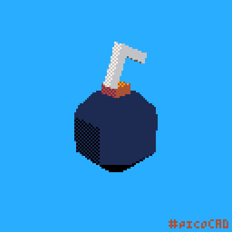
Bomb
Lucky thing it's not ignited.
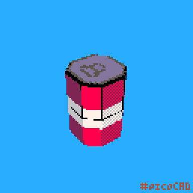
Soda Can
Fizzy!
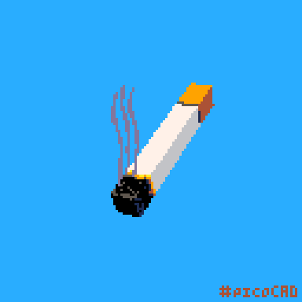
Cigarette
Don't smoke guys!
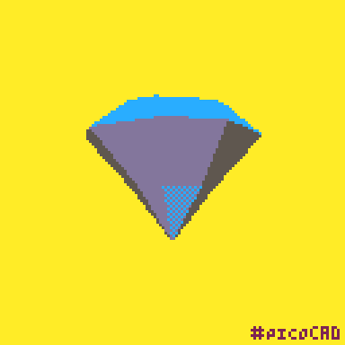
Diamond
IM RICH!
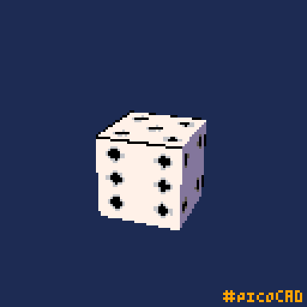
Dice
Chooses your destiny.

King Slime
Trying its best.
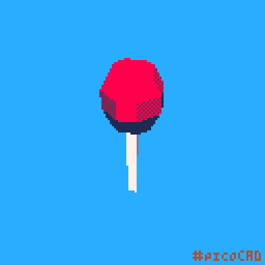
Lollipop
Impossible to unwrap.
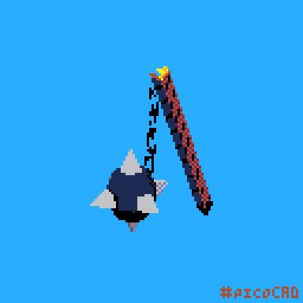
Mace
The real skull-crusher.
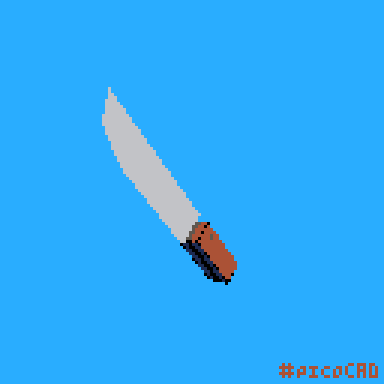
Machete
Might chop your hand off.

Magnifying Glass
May cause unexpected fires.

Mario Kart Trophy
Given to the best racers.

Minecraft's Bee
Bzzzzz!

Mistery Block
Looks rather familiar.
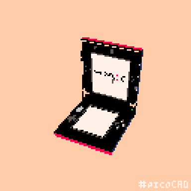
Nintendo 3DS XL
Everybody's childhood.

Slice of Cake
Happy birthday!

Potted Flower
The master of patio design.

Red Button
Makes you want to press it.

Rubik's Cube
Only the biggest minds can solve it.
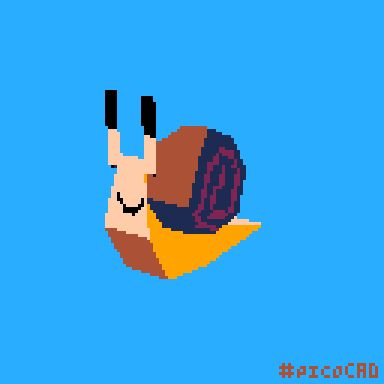
Snail
Takes its time...

Stack of Money
The rubber band is about to snap.
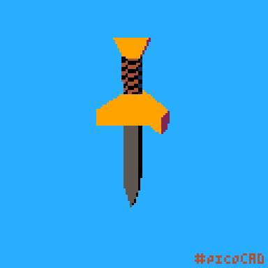
Sword
Recently forged.

Toilet Paper
The "trick" in "trick or treat"

Top Hat
Classy.
Accomplishments
Winner of the Garfagnana's Got Talent 2026
Date: 14/08/2026
Garfagnana's Got Talent is a big event held in Castelnuovo di Garfagnana that features many talented artists who compete for the big prize of 1.500 euros in coupons. It was a tough competition, many participants were very talented. My performance, however, scored me the win, allowing me to gain immense visibility and confidence for future projects.
Selected for Italian Beatbox Champs of 2026
Date: 11/03/2026
In order to enter the Italian Beatbox Championship, you must record a Wildcard, which is a video of your beatboxing. Only the best wildcards would get selected to go to the live event.
This year (2026), besides it being my first recorded wildcard ever, my performance was included in the top 32 and I managed to score a spot to the live event. The moment I saw the post with my name on it, I freaked out, I couldn't believe it. I was finally able to show the community my skills and passion for beatboxing, as well as being able to meet many beatbox brothers.
I see this as the start of a big growth in my career, as it brought me confidence and determination.
Winner of the contest "Progetto Finanza e Borsa Nella Scuola A.S. 2023/2024"
Date: 22/10/2024
A finance class I was attending with my friends in high school organized a contest, it consisted forming a team and buying / selling actions on a simulator online.
The two teams that would make the biggest profits would be considered the winners of the contest. Unexpectedly, my team won and we managed to score a free trip to London. It had always been my dream to go to London, my friends and I were super excited when we found out about it.
We even got a spot on the local journal, it was a rather satisfying experience.
Winner of a Video Game Creation Contest
Date: 10/06/2021
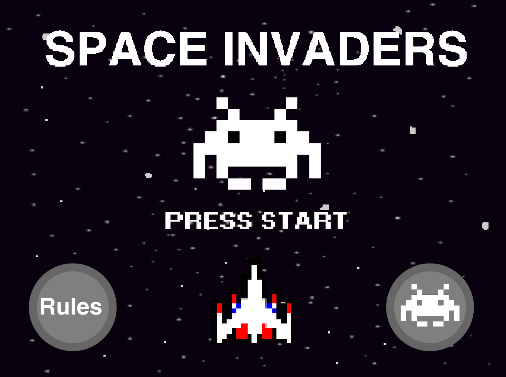
During my first year of high school, I participated with some friends in a Video Game Developing contest: we had to recreate Space Invaders by using Scratch 2.
The contest consisted in two rounds: in the first round groups from the same class would clash, the winner would then advance to the second and final round against groups of other classes.
My group managed to get 1st place, our project was well polished, great sound design, mechanics, unique abilities and features, great code and even some easter eggs (Kirby was a playable character).
You can find the original project on my GitHub!
More about me
Drip, the story of my name
I used to play on a Minecraft server with my classmates. I had a base made of floating islands, with one large island in the center and several smaller ones surrounding it.
The only way to reach the islands was through a stream of water that ran all the way down to the ground. As you can imagine, bringing mobs up there was difficult, and I often felt a little lonely.
One day, I decided to find a companion. I came across a fox holding an emerald and jokingly named him Drip. I brought him up the water stream and started building an island just for him.
Sadly, the bridges connecting the islands weren't very safe, and Drip fell to his death.
The island I had built for him eventually became a graveyard, with nothing but his tombstone on it. I placed his emerald on the grave and added a book where everyone could leave a message for him.
Drip had been the mascot of the server for as long as it existed, so losing him was a big moment for everyone.
To honor him, I decided to take his name so he would never be forgotten. I changed my Discord name to Drip, and I've kept it ever since.
Drip lives on, enjoying paradise.
Favorites
- Favorite Food: Tiramisu, Peas
- Favorite Movie: Interstellar
- Favorite Movie Genre: Drama
- Favorite Color: Light Blue
- Favorite TV Show: Dexter (2006)
- Favorite Song: Enemy Brain by Fox Stevenson
- Favorite Music Genre: House, DnB, Techno
- Favorite Video Game Genre: Roguelike / Roguelite
- Favorite Season: Winter
- Favorite Weather: Sunny
- Favorite Holiday: Christmas
- Favorite Flower: Sunflower
- Favorite Animal: Fox
- Favorite City: London
- Favorite Place Visited: London
- Favorite Sport: Volleyball
- Favorite Board Game: Chess


.JPG)